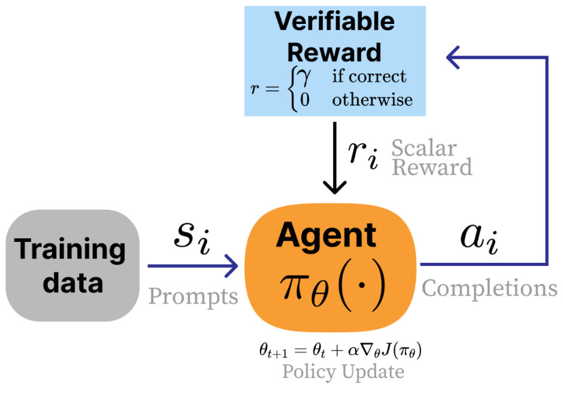

7Reasoning &
Inference-Time Scaling
- How and why language models are trained to reason
- How Reinforcement Learning with Verifiable Rewards (RLVR) builds on RLHF
- Common implementation decisions for RLVR
- Key reasoning models that established best practices
Reasoning models and inference-time scaling enabled a massive step in language model performance in the end of 2024, through 2025, and into the future. Inference-time scaling is the underlying property of machine learning systems that language models trained to think extensively before answering exploit so well. These models, trained with a large amount of reinforcement learning with verifiable rewards (RLVR) [1], still utilize large amounts of RLHF. In this chapter we review the path that led the AI community to a transformed appreciation for RL’s potential in language models, review the fundamentals of RLVR, highlight key works, and point to the future debates that will define the area in the next few years.
To start, at the 2016 edition of the Neural Information Processing Systems (NeurIPS) conference, Yann LeCun first introduced his now-famous cake metaphor for where learning happens in modern machine learning systems:
If intelligence is a cake, the bulk of the cake is unsupervised learning, the icing on the cake is supervised learning, and the cherry on the cake is reinforcement learning (RL).
This analogy is now largely complete with modern language models and recent changes to the post-training stack. RLHF was the precursor to this, and RL for reasoning models, primarily on math, code, and science topics, was its confirmation. In this analogy:
- Self-supervised learning on vast swaths of internet data makes up the majority of the cake (especially when viewed in compute spent in FLOPs),
- The beginning of post-training in supervised fine-tuning (SFT) for instructions tunes the model to a narrower distribution, and
- Finally “pure” reinforcement learning (RL) is the cherry on top. The scaled up reinforcement learning used to create the new “reasoning” or “thinking” models is this finishing piece (along with the help of RLHF, which isn’t considered classical RL, as we’ll explain).
This little bit of reasoning training emerged with thinking models that use a combination of the post-training techniques discussed in this book to align preferences along with RL training on verifiable domains to dramatically increase capabilities such as reasoning, coding, and mathematics problem solving.
The training method for these models, Reinforcement Learning with Verifiable Rewards (RLVR) [1], proceeds very similarly to RLHF, but it makes the reward model optional in lieu of a scoring function that returns a positive reward when the answer is correct and 0 otherwise.
For example, consider how different it is to score responses for RLHF versus RLVR. In RLHF, a reward model must evaluate subjective qualities:
Explain the concept of opportunity cost in economics.
: Opportunity cost is the value of the next best alternative you give up when making a decision. For example, if you spend an hour studying instead of working, the opportunity cost is the wages you could have earned…
Scoring this response requires judging clarity, accuracy, completeness, and helpfulness – all qualities that require learned preferences and lack a definitive correct answer.
In contrast, RLVR uses verification functions that return definitive scores. For mathematics:
What is the sum of all prime numbers less than 20?
: The prime numbers less than 20 are 2, 3, 5, 7, 11, 13, 17, and 19. Adding them: 2 + 3 = 5, then 5 + 5 = 10, then 10 + 7 = 17, then 17 + 11 = 28, then 28 + 13 = 41, then 41 + 17 = 58, and finally 58 + 19 = 77. The answer is 77.
extracted\_answer == 77 → Reward = 1
The \boxed{} notation is a convention adopted from mathematical typesetting that makes answer extraction straightforward – a simple regular expression can pull the final answer from the response, regardless of how the model arrived at it. Note that other answer extraction methods exist, such as just using the phrase “The answer is:” as also shown above, special tokens like <answer>, or delimiters like \#\#\#\#.
For code generation, verification often takes the form of unit tests:
Write a Python function fib(n) that returns the nth Fibonacci number, where fib(0) = 0 and fib(1) = 1.
: def fib(n): if n < 2: return n return fib(n - 1) + fib(n - 2)
assert fib(0) == 0 # base case assert fib(1) == 1 # base case assert fib(10) == 55 # larger value (All tests pass → Reward = 1)
Unit tests are the natural verification function for code: they execute the model’s solution against known input-output pairs. A common form of scoring is to perform the simple gating: If all assertions pass, the reward is 1; if any fail, the reward is 0. Other setups use partial credit proportional to the amount of tests passed. For both these examples, no learned reward model is needed and most setups go without one (because the models are robust to over-optimization in these domains), but one can be used with a linear combination of rewards.
The ideas behind RLVR are not new to the RL literature, where the core idea of taking gradient updates on if the answer is correct is almost the textbook definition of reinforcement learning. The innovations when applying this to language models are largely how to apply it while maintaining the strong, general capabilities of the model being fine- tuned. Within that, there are many related ideas in the language modeling literature where the model learns from feedback regarding the correctness of the answer.
Originally, in the work I was a part of that coined RL with Verifiable Rewards (RLVR) [1], the method was to be named RL with Ground Truth rewards (RLGT). However, RLVR is subtly different from learning solely from ground truth answers. In domains like mathematics, a single ground truth answer is available to verify solutions, as we saw above. In other domains, such as code generation or precise instruction following, answers can be verified with a checking function (e.g., a unit test), even when there are multiple correct solutions rather than just a single ground truth answer. The core to progress on RLVR is having a variety and depth of these verifiable problems, even if the exact solution isn’t known a priori.

The first models to successfully deploy this type of training were OpenAI’s o1 [2] and the open-weight model DeepSeek R1 [3]. Soon after, the entire AI industry prioritized this training process and model style. The core change here is more of a reallocation of the stages of training and the priority of different behaviors rather than this type of RL setup being entirely new. Reasoning models brought an era where scaling RL training is expected.
As for the type of behavior these models accrue, consider the following example with DeepSeek V3 0325 versus their reasoning model, DeepSeek R1, on the query “Write me a short poem about a goldfish.” DeepSeek V3 is very to the point:
Write me a short poem about a goldfish.
Goldfish Dreams In a bowl of glass so clear and round, A tiny goldfish swims without a sound. With scales that gleam like sunlight’s kiss, He drifts along in watery bliss. A flick of fin, a flash so bright, Chasing bubbles in the light. Does he dream of oceans wide? Or is his little world enough—his pride?
Meanwhile, DeepSeek R1’s experience is different. It first generates numerous thinking tokens to craft a response before responding to the user. The answer appears as:
Write me a short poem about a goldfish.
Okay, the user wants a short poem about a goldfish. Let me start by brainstorming some goldfish-related imagery. Goldfish are often in bowls, right? So maybe start with the setting. Words like “gilded bowl” or “crystal globe” could work. Next, think about the movement of the goldfish. They swim smoothly, so words like “dart”, “glide”, or “swirl” come to mind. Maybe describe their fins as “silken” to emphasize delicacy. Then, consider the environment around the goldfish. Sunlight through water creates shimmering effects. Words like “sunbeams dance” or “ripples spin” might capture that. Including elements like castles or pebbles adds a playful touch. Themes? Maybe the contrast between the goldfish’s small world and its perception of freedom. The bowl as a universe, tiny but complete. Ending with a sense of mystery or silent observation could give depth. Need to keep it concise, maybe four stanzas with a rhyme scheme. Let me check the rhythm and flow. Avoid clichés but keep it accessible. Alright, let’s piece it together.
Gilded Dreams in Liquid Glass A gilded bowl, a crystal globe, Where tiny tides in silence flow— A flash of orange, a whispered robe, You dart through sunlit indigo. Your world is small, yet boundless too— Each pebble, castle, weed unfurled. The surface bends the sky to blue, And ripples spin your liquid world.
You glide through myths we’ll never know, A silent monarch, veiled in mist. Do dreams drift where the bubbles go? Or memories in amethyst? We watch you trace your endless sphere— A universe within a tear.
The tokens in the <thinking> tags are the model’s reasoning. For more complex problems the reasoning stage can take thousands of tokens before producing an answer. So, long-context language models were a prerequisite to advanced reasoning behavior, but that is not the focus of this chapter.
The core intuition for how this training works is that for a given model, we repeat the following cycle:
- 1. Sample multiple answers to multiple questions,
- 2. Take gradient steps towards the answers that are correct, and
- 3. Repeat, revisiting the same data.
Remarkably, this extremely simple approach (when done with a careful distribution of data and stable training infrastructure) helps the models learn by revisiting the same questions again and again. Even more remarkable is that the improvements on these training questions generalize to questions and (some) domains the models have never seen!
This simple approach allows the models to lightly search over behavior space and the RL algorithm increases the likelihood of behaviors that are correlated with correct answers.
#7.1 The Origins of New Reasoning Models
Here we detail the high-level trends that led to the explosion of reasoning models in 2025.
#7.1.1 Why Does RL Work Now?
Despite many, many takes that “RL doesn’t work yet” [4] or papers detailing deep reproducibility issues with RL [5], the field overcame it to find high-impact applications. Some are covered in this book, such as ChatGPT’s RLHF and DeepSeek R1’s RLVR, but many others exist, including improving chip design [6], mastering video gameplay [7], self-driving [8], and more. The takeoff of RL-focused training on language models indicates steps in many fundamental issues for the research area, including:
- Stability of RL can be solved: For its entire existence, the limiting factor on RL’s adoption has been stability. This manifests in two ways. First, the learning itself can be fickle and not always work. Second, the training itself is known to be more brittle than standard language model training and more prone to loss spikes, crashes, etc. Countless new model releases are using this style of RL training with verifiable rewards on top of a pretrained base model and substantial academic uptake has occurred. The technical barriers to entry on RL are at an all time low.
- Open-source versions already “exist”: Many tools already exist for training language models with RLVR and related techniques. Examples include TRL [9], Open Instruct [1], veRL [10], and OpenRLHF [11], where many of these are building on optimizations from earlier in the arc of RLHF and post-training. The accessibility of tooling is enabling a large uptake of research that’ll likely soon render this chapter out of date.
Multiple resources point to RL training for reasoning only being viable on leading models coming out from about 2024 onwards, indicating that a certain level of underlying capability was needed in the models before reasoning training was possible.
#7.1.2 RL Training vs. Inference-time Scaling
Training with Reinforcement Learning to elicit reasoning behaviors and performance on verifiable domains is closely linked to the ideas of inference-time scaling. Inference-time scaling, also called test-time scaling, is the general class of methods that use more computational power at inference in order to perform better at downstream tasks. Methods for inference-time scaling were studied before the release of DeepSeek R1 and OpenAI’s o1, which both massively popularized investment in RL training specifically. Examples include value-guided sampling [12] or repeated random sampling with answer extraction [13]. Beyond this, inference-time scaling can be used to improve more methods of AI training beyond chain-of-thought reasoning to solve problems, such as with reward models that consider the options deeply [14] [15].
RL training is a short path to inference-time scaling laws being used, but in the long- term we will have more methods for eliciting the inference-time tradeoffs we need for best performance. Training models heavily with RL often enables them to generate more tokens per response in a way that is strongly correlated with improved, downstream performance (though, while this sequence length increase is the default, research also exists explicitly on improving performance without relying on this inference-time scaling). This is a substantial shift from the length-bias seen in early RLHF systems [16], where the human preference training had a side effect of increasing the response average length for marginal gains on preference rankings.
Other than the core RL trained models there are many methods being explored to continue to push the limits of reasoning and inference-time compute. These are largely out of the scope of this book due to their rapidly evolving nature, but they include distilling reasoning behavior from a larger RL trained model to a smaller model via instruction tuning [17], composing more inference calls [18], and more. What is important here is the correlation between downstream performance and an increase in the number of tokens generated – otherwise it is just wasted energy.
#7.1.3 The Future (Beyond Reasoning) of RLVR
In many domains, these new flavors of RLVR are much more aligned with the goals of developers by being focused on performance rather than behavior. Standard fine-tuning APIs generally use a parameter-efficient fine-tuning method such as LoRA with supervised fine-tuning on instructions. Developers pass in prompts and completions and the model is tuned to match that by updating model parameters to match the completions, which increases the prevalence of features from your data in the model’s generations.
RLVR is focused on matching answers. Given queries and correct answers, RLVR helps the model learn to get the correct answers. While standard instruction tuning is done with 1 or 2 epochs of loss updates over the data, RLVR gets its name by doing hundreds or thousands of epochs over the same few data points to give the model time to learn new behaviors. This can be viewed as reinforcing positive behaviors that would work sparingly in the base model version into robust behaviors after RLVR.
The scope of RL training for language models continues to grow: The biggest takeaway from o1 and R1 on a fundamental scientific level was that we have even more ways to train language models to potentially valuable behaviors. The more open doors that are available to researchers and engineers, the more optimism we should have about AI’s general trajectory.
#7.2 Understanding Reasoning Training Methods
The investment in reasoning has instigated a major evolution in the art of how models are trained to follow human instructions. These recipes still use the common pieces discussed in earlier chapters (as discussed in Chapter 3 with the overview of DeepSeek R1’s recipe), including instruction fine-tuning, reinforcement learning from human feedback, and reinforcement learning with verifiable rewards (RLVR). The core change is using far more RLVR and applying the other training techniques in different orders – traditionally for a reasoning model the core training step is either a large-scale RL run or a large-scale instruction tuning run on outputs of another model that had undergone a substantial portion of RLVR training (referred to as distillation).
#7.2.1 Reasoning Research Pre OpenAI’s o1 or DeepSeek R1
Before the takeoff of reasoning models, a substantial effort was made understanding how to train language models to be better at verifiable domains. The main difference between these works below is that their methodologies did not scale up to the same factor as those used in DeepSeek R1 and subsequent models, or they resulted in models that made sacrifices in overall performance in exchange for higher mathematics or coding abilities. The underlying ideas and motivations are included to paint a broader picture for how reasoning models emerged within the landscape.
Some of the earliest efforts training language models on verifiable domains include self-taught reasoner (STaR) line of work[19] [20] and TRICE [21], which both used ground- truth reward signals to encourage chain-of-thought reasoning in models throughout 2022 and 2023. STaR effectively approximates the policy gradient algorithm, but in practice filters samples differently and uses a cross-entropy measure instead of a log-probability, and Quiet-STaR expands on this with very related ideas of recent reasoning models by having the model generate tokens before trying to answer the verifiable question (which helps with training performance). TRICE [21] also improves upon reasoning by generating traces and then optimizing with a custom Markov chain Monte Carlo inspired expectation maximization algorithm. VinePPO [22] followed these and used a setup that shifted closer to modern reasoning models. VinePPO uses a PPO-based algorithm with binary rewards for math question correctness, training on GSM8K and MATH. Other work before OpenAI’s o1 and DeepSeek R1 used code execution as a feedback signal for training [23], [24] or verification for theorem proving (called Reinforcement Learning from Verifier Feedback, RLVF, here) [25]. Tülu 3 expanded upon these methods by using a simple PPO trainer to reward completions with correct answers – most importantly while maintaining the model’s overall performance on a broad suite of evaluations. The binary rewards of Tülu 3 and modern reasoning training techniques can be contrasted to the iterative approach of STaR or the log-likelihood rewards of Quiet-STaR.
#7.2.2 Early Reasoning Models
A summary of the foundational reasoning research reports, some of which are accompanied by open data and model weights, following DeepSeek R1 is below.
| Model | Organization | Open Weights | Data/Process Open | Notes |
|---|---|---|---|---|
| 2025- 01-22 | DeepSeek R1 [3] | RL-based upgrade to DeepSeek, big gains on math | code reasoning | Yes |
| 2025- 01-22 | Kimi 1.5 [26] | Scales PPO/GRPO on Chinese/English data; strong AIME maths | No | No |
| 2025- 03-31 | Open- Reasoner-Zero [27] | Fully open replication of base model RL | Yes | Yes |
| 2025- 04-10 | Seed-Thinking 1.5 [28] | ByteDance RL pipeline with dynamic CoT gating | Yes | No |
| 2025- 04-30 | Phi-4 Reasoning [29] | 14B model; careful SFT→RL; excels at STEM reasoning | Yes | No |
| 2025- 05-02 | Llama- Nemotron [30] | Multi-size “reasoning-toggle” models | Yes | Yes |
| 2025- 05-12 | INTELLECT-2 [31] | First, publicly documented globally- decentralized RL training run | Yes | Yes |
| 2025- 05-12 | Xiaomi MiMo [32] | End-to-end reasoning pipeline from pre- to post-training | Yes | No |
| 2025- 05-14 | Qwen 3 [33] | Similar to R1 recipe applied to new models | Yes | No |
| 2025- 05-21 | Hunyuan- TurboS [34] | Mamba-Transformer MoE, adaptive long/short CoT | No | No |
| 2025- 05-28 | Skywork OR-1 [35] | RL recipe avoiding entropy collapse; beats DeepSeek on AIME | Yes | Yes |
| 2025- 06-04 | Xiaomi MiMo VL [36] | Adapting reasoning pipeline end-to- end to include multi-modal tasks | Yes | No |
| 2025- 06-04 | OpenThoughts [37] | Public 1.2M-example instruction dataset distilled from QwQ-32B | Yes | Yes |
| 2025- 06-10 | Magistral [38] | Pure RL on Mistral 3; multilingual CoT; small model open-sourced | Yes | No |
| 2025- 06-16 | MiniMax-M1 [39] | hybrid/Lightning Attention reasoning releases 40K/80K thinking-budget model; 1M context; RL w/CISPO; Open-weight 456B MoE checkpoints | Yes | No |
| 2025- 07-10 | Kimi K2 [40] | synthesis + joint RL; releases base + 1T MoE (32B active) with MuonClip pretrain without loss spikes; multi- (QK-clip) for stability; 15.5T token stage post-train with agentic data post-trained checkpoints. | Yes | No |
| 2025- 07-28 | GLM-4.5 [41] | iteration and RL; releases GLM-4.5 + Open-weight 355B-A32B MoE “ARC” model with thinking/non-thinking training + post-train w/ expert modes; 23T-token multi-stage GLM-4.5-Air (MIT). | Yes | No |
|---|---|---|---|---|
| 2025- 08-20 | Nemotron Nano 2 [42] | “thinking traces”; FP8 pretraining at Hybrid Mamba-Transformer for long releases multiple checkpoints plus compression/distillation; explicitly “majority” of pre/post-training 20T tokens then datasets. | Yes | Yes (most) |
| 2025- 09-09 | K2-Think [43] | positioned as fully open incl. training system: a 32B open-weights model Parameter-efficient math reasoning data/code (per release materials). with test-time scaling recipe; | Yes | Yes |
| 2025- 09-23 | LongCat-Flash- Thinking [44] | long-CoT cold start to large-scale RL; 560B MoE reasoning model; report is explicit about a staged recipe from open-source release. | Yes | No |
| 2025- 10-21 | Ring-1T [45] | bottlenecks/solutions for scaling RL at Trillion-scale “thinking model” with RL 1T and releases an open model. scaling focus; report frames | Yes | No |
| 2025- 11-20 | OLMo 3 Think [46] | reports the entire lifecycle (stages, checkpoints, and data points) and positions OLMo 3 Think 32B as a Fully open “model flow” release: flagship open thinking model. | Yes | Yes |
| 2025- 12-02 | DeepSeek V3.2 [47] | Open-weight MoE frontier push with a efficiency changes, RL framework report that foregrounds attention upgrades, and data synthesis for agentic/reasoning performance. | Yes | No |
| 2025- 12-05 | K2-V2 [48] | post-training for controllable thinking. 70B dense “360-open” model trained from scratch; with 3-effort SFT-only | Yes | Yes |
| 2025- 12-15 | Nemotron 3 Nano [49] | Transformer; pretrain on 25T tokens and includes SFT + large-scale RL; explicitly states it ships weights + recipe/code + most training data. 30B-A3B MoE hybrid Mamba- | Yes | Yes (most) |
| 2025- 12-16 | MiMo-V2-Flash [50] | lightweight MTP; FP8 pretrain on 27T 309B MoE (15B active) optimized for speed: hybrid SWA/GA attention tokens; post-train with MOPD + (5:1, 128-token window) + large-scale agentic RL for reasoning/coding. | Yes | No |
|---|
#7.2.3 Common Practices in Training Reasoning Models
In this section we detail common methods used to sequence training stages and modify data to maximize performance when training a reasoning model.
Note that these papers could have used a listed technique and not mentioned it while their peers do, so these examples are a subset of known implementations and should be used as reference, but not a final proclamation on what is an optimal recipe.
- Offline difficulty filtering: A core intuition of RLVR is that models can only learn from examples where there is a gradient. If the starting model for RLVR can solve a problem either 100% of the time or 0% of the time, there will be no gradient between different completions to the prompt (i.e., all strategies appear the same to the policy gradient algorithm). Many models have used difficulty filtering before starting a large-scale RL to restrict the training problems to those that the starting point model solves only 20-80% of the time. This data is collected by sampling N, e.g. 16, completions to each prompt in the training set and verifying which percentage are correct. Forms of this were used by Seed- Thinking 1.5, Open Reasoner Zero, Phi 4, INTELLECT-2, MiMo RL, Skywork OR-1, and others.
- Per-batch online filtering (or difficulty curriculums throughout training): To complement the offline filtering to find the right problems to train on, another major question is “what order should we present the problems to the model during learning.” In order to address this, many models use online filtering of questions in the batch, prebuilt curriculums/data schedulers, saving harder problems for later in training, or other ideas to improve long-term stability. Related ideas are used by Kimi 1.5, Magistral, Llama-Nemotron, INTELLECT-2, MiMo-RL, Hunyuan- TurboS, and others.
- Remove KL penalty: As the length of RL runs (in any metric, total GPU hours, FLOPS, or RL steps) increased for reasoning models relative to RLHF training, and the reward function became less prone to over-optimization, many models removed the KL penalty constraining the RL-learned policy to be similar to the base model of training. This allows the model to further explore during its training. This was used by RAGEN [51], Magistral, OpenReasonerZero, Skywork OR-1, and others.
- Relaxed policy-gradient clipping: New variations of the algorithm GRPO, such as DAPO [52], proposed modifications to the two sided clipping objective used in GRPO (or PPO) in order to enable better exploration. Clipping has also been shown to cause potentially spurious learning signals when rewards are imperfect [53]. This two-sided clipping with different ranges per gradient direction is used by RAGEN, Magistral, INTELLECT-2, and others.
- Off-policy data (or fully asynchronous updates): As the length of completions needed to solve tasks with RL increases dramatically with harder problems (particularly in the variance of the response length, where there are often outliers with extremely long lengths), compute in RL runs can sit idle. To solve this, training is moving to asynchronous updates or changing how problems are arranged into batches to improve overall throughput. Partial-to-full asynchronous (off-policy) data is used by Seed-Thinking 1.5, INTELLECT-2, and others.
- Additional format rewards: In order to make the reasoning process predictable, many models add minor rewards to make sure the model follows the correct format of e.g.
<think>...</think>before an answer. This is used by DeepSeek R1, OpenReasonerZero, Magistral, Skywork OR- 1, and others. - Language consistency rewards: Similar to format rewards, some multilingual reasoning models use language consistency rewards to prioritize models that do not change languages while reasoning (for a better and more predictable user experience). These include DeepSeek R1, Magistral, and others.
- Length penalties: Many models use different forms of length penalties during RL training to either stabilize the learning process over time or to mitigate overthinking on hard problems. Some examples include Kimi 1.5 progressively extending the target length to combat overthinking (while training accuracy is high across difficulty curriculum) or INTELLECT-2 running a small length penalty throughout. Progressively extending the training sequence length mitigates overthinking by forcing the model to first reason effectively in a domain with a more limited thinking budget, and then transitioning to longer training where the model can use those behaviors efficiently on more complex problems. Others use overlong filtering and other related implementations to improve throughput.
- Loss normalization: There has been some discussion (see the chapter on Policy Gradients or [54]) around potential length or difficulty biases introduced by the per-group normalization terms of the original GRPO algorithm. As such, some models, such as Magistral or MiMo, chose to normalize either losses or advantages at the batch level instead of the group level.
- Parallel test-time compute scaling: Combining answers from multiple parallel, independently-sampled rollouts can lead to substantial improvements over using the answer from a single rollout. The most naive form of parallel test-time compute scaling, as done in DeepSeek- R1, Phi-4, and others, involves using the answer returned by a majority of rollouts as the final answer. A more advanced technique is to use a scoring model trained to select the best answer out of the answers from the parallel rollouts. This technique has yet to be adopted by open reasoning model recipes (as of June 2025) but was mentioned in the Claude 4 announcement [55] and used in DeepSeek-GRM [15].
In complement to the common techniques, there are also many common findings on how reasoning training can create useful models without sacrificing ancillary capabilities:
- Text-only reasoning boosts multimodal performance: Magistral, MiMo-VL, and others find that training a multimodal model and then performing text-only reasoning training after this multimodal training can improve multimodal performance in the final model.
- Toggleable reasoning with system prompt (or length control): Llama-Nemotron, Nemotron Nano, Qwen 3, SmolLM 3, and others use specific system prompts (possibly in combination with length-controlled RL training [56]) to enable a toggleable on/off thinking length for the user. Other open models, such as OpenAI’s GPT-OSS and LLM360’s K2-V2 [48] adopt a low-medium-high reasoning effort set in the system prompt, but training methods for this type of behavior are not as well documented.
#7.3 Looking Ahead
The landscape of reasoning models is evolving faster than any area of AI research in recent memory. By the time this chapter is published, the table of reasoning models above will be incomplete and some of the common practices listed may have been superseded by new techniques.
Several efforts are underway to systematically understand what makes reasoning training work. OLMo 3 Think [46] represents the most comprehensive open documentation of a reasoning model’s full training lifecycle, providing checkpoints and data at each stage for the research community to study, and concluding with a nearly 4 week long training run on 220 GPUs. Similarly, work on understanding the scaling properties of RL for reasoning [57] is beginning to formalize relationships between compute, data, and performance that were previously only intuited by practitioners.
What remains clear is that reinforcement learning has graduated from the “cherry on top” of the cake metaphor to a load-bearing component of frontier model training. The minor techniques in this chapter around the idea of RLVR – difficulty filtering, format rewards, and the rest – are not the final answers, but they represent the field’s current best understanding of how to elicit reasoning from language models. The next generation of methods will likely look different, but they will build on the foundations established here.
N. Lambert et al., “Tulu 3: Pushing frontiers in open language model post-
training,” arXiv preprint arXiv:2411.15124, 2024.
[2]OpenAI, “Introducing OpenAI o1-preview.” Sep. 2024. Available: https://openai.
com/index/ introducing- openai-o1- preview/
D. Guo et al., “Deepseek-r1: Incentivizing reasoning capability in llms via
reinforcement learning,” arXiv preprint arXiv:2501.12948, 2025.
[4]A. Irpan, “Deep reinforcement learning doesn’t work yet.” 2018. Available:
https://www. alexirpan. com/2018/ 02/14/rl- hard.html
[5]P. Henderson, R. Islam, P. Bachman, J. Pineau, D. Precup, and D. Meger, “Deep
reinforcement learning that matters,” in Proceedings of the AAAI conference on
artificial intelligence, 2018. Available: https://ojs. aaai.org/ index.php/ AAAI/article/ view/11694
[6]A. Mirhoseini et al., “Chip placement with deep reinforcement learning,” in Design, automation and test in europe (DATE), 2023.
[7]J. Schrittwieser et al., “Mastering atari, go, chess and shogi by planning with a
learned model,” Nature, vol. 588, no. 7839, pp. 604–609, 2020.
[8]M. Cusumano-Towner et al., “Robust autonomy emerges from self-play,” in
International conference on machine learning (ICML), 2025.
[9]L. von Werra et al., “TRL: Transformer reinforcement learning,” GitHub repository. https://github. com/huggingface/ trl; GitHub, 2020.
[10]G. Sheng et al., “HybridFlow: A flexible and efficient RLHF framework,” in European conference on computer systems (EuroSys), 2025.
[11]J. Hu et al., “OpenRLHF: An easy-to-use, scalable and high-performance RLHF
framework,” arXiv preprint arXiv:2405.11143, 2024.
[12]J. Liu, A. Cohen, R. Pasunuru, Y. Choi, H. Hajishirzi, and A. Celikyilmaz, “Don’t throw away your value model! Generating more preferable text with value-guided monte-carlo tree search decoding,” arXiv preprint arXiv:2309.15028, 2023.
[13]B. Brown et al., “Large language monkeys: Scaling inference compute with repeated sampling,” arXiv preprint arXiv:2407.21787, 2024.
[14]Z. Ankner, M. Paul, B. Cui, J. D. Chang, and P. Ammanabrolu, “Critique-out-loud
reward models,” arXiv preprint arXiv:2408.11791, 2024.
Z. Liu et al., “Inference-time scaling for generalist reward modeling,” arXiv
preprint arXiv:2504.02495, 2025.
[16]P. Singhal, T. Goyal, J. Xu, and G. Durrett, “A long way to go: Investigating length
correlations in rlhf,” arXiv preprint arXiv:2310.03716, 2023.
[17]N. Muennighoff et al., “s1: Simple test-time scaling,” arXiv preprint
arXiv:2501.19393, 2025.
[18]L. Chen et al., “Are more llm calls all you need? Towards scaling laws of compound inference systems,” arXiv preprint arXiv:2403.02419, 2024.
[19]E. Zelikman, Y. Wu, J. Mu, and N. Goodman, “STaR: Bootstrapping reasoning with
reasoning,” in Advances in neural information processing systems, A. H. Oh, A.
Agarwal, D. Belgrave, and K. Cho, Eds., 2022. Available: https://openreview.
[20]E. Zelikman, G. Harik, Y. Shao, V. Jayasiri, N. Haber, and N. D. Goodman, “Quiet-
STaR: Language models can teach themselves to think before speaking,” COLM, vol. abs/2403.09629, 2024.
M. D. Hoffman et al., “Training chain-of-thought via latent-variable inference,” in Thirty-seventh conference on neural information processing systems, 2023.
Available: https://openreview. net/forum? id=a147pIS2Co
[22]A. Kazemnejad et al., “VinePPO: Unlocking RL potential for LLM reasoning through refined credit assignment.” 2024. Available: https://arxiv. org/abs/2410. 01679
[23]J. Gehring, K. Zheng, J. Copet, V. Mella, T. Cohen, and G. Synnaeve, “RLEF:
Grounding code LLMs in execution feedback with reinforcement learning,” in
International conference on machine learning (ICML), 2025. Available: https://arxiv. org/abs/2410. 02089
[24]S. Xu et al., “Is DPO superior to PPO for LLM alignment? A comprehensive study,” in ICML, 2024. Available: https://openreview. net/forum? id=6XH8R7YrSk
[25]N. Amit, S. Goldwasser, O. Paradise, and G. Rothblum, “Models that prove their own correctness,” Electron. Colloquium Comput. Complex., 2024.
[26]K. Team et al., “Kimi k1. 5: Scaling reinforcement learning with llms,” arXiv preprint arXiv:2501.12599, 2025.
[27]J. Hu, Y. Zhang, Q. Han, D. Jiang, X. Zhang, and H. Shum, “Open-reasoner-zero: An open source approach to scaling up reinforcement learning on the base model,”
arXiv preprint arXiv:2503.24290, 2025.
[28]B. Seed et al., “Seed-thinking-v1. 5: Advancing superb reasoning models with
reinforcement learning,” arXiv preprint arXiv:2504.13914, 2025.
[29]M. Abdin, S. Agarwal, A. Awadallah, et al., “Phi-4-reasoning technical report,” arXiv preprint arXiv:2504.21318, 2025.
[30]A. Bercovich, I. Levy, I. Golan, et al., “Llama‑nemotron: Efficient reasoning models,” arXiv preprint arXiv:2505.00949, 2025.
[31]P. I. Team et al., “INTELLECT-2: A reasoning model trained through globally
decentralized reinforcement learning.” 2025. Available: https://arxiv. org/abs/2505. 07291
[32]B. Xia et al., “MiMo: Unlocking the reasoning potential of language model–from
pretraining to posttraining,” arXiv preprint arXiv:2505.07608, 2025.
[33]A. Yang et al., “Qwen3 technical report,” arXiv preprint arXiv:2505.09388, 2025.
[34]A. Liu, B. Zhou, C. Xu, et al., “Hunyuan‑TurboS: Advancing large language models through mamba‑transformer synergy and adaptive chain‑of‑thought,” arXiv preprint arXiv:2505.15431, 2025.
[35]J. He, J. Liu, C. Y. Liu, et al., “Skywork open reasoner 1 technical report,” arXiv
preprint arXiv:2505.22312, 2025.
[36]C. Team et al., “MiMo-VL technical report.” 2025. Available: https://arxiv.
[37]E. Guha, R. Marten, S. Keh, et al., “OpenThoughts: Data recipes for reasoning
models,” arXiv preprint arXiv:2506.04178, 2025.
[38]Mistral AI, “Magistral: Scaling reinforcement learning for reasoning in large language models,” Mistral AI, 2025. Available: https://mistral. ai/static/ research/ magistral. pdf
[39]MiniMax, “MiniMax-M1: Scaling test-time compute efficiently with lightning
attention.” 2025. doi: 10.48550/arXiv.2506.13585.
[40]K. Team et al., “Kimi K2: Open agentic intelligence.” 2025. Available: https://arxiv. org/abs/2507. 20534
[41]A. Zeng et al., “GLM-4.5: Agentic, reasoning, and coding (ARC) foundation models.” 2025. doi: 10.48550/arXiv.2508.06471.
[42]NVIDIA, “NVIDIA nemotron nano 2: An accurate and efficient hybrid mamba-
transformer reasoning model.” 2025. Available: https://arxiv. org/abs/2508. 14444
[43]Z. Cheng et al., “K2-think: A parameter-efficient reasoning system.” 2025.
Available: https://arxiv. org/abs/2509. 07604
[44]M. L. Team, “Introducing LongCat-flash-thinking: A technical report.” 2025.
Available: https://arxiv. org/abs/2509. 18883
[45]L. Team et al., “Every step evolves: Scaling reinforcement learning for trillion-scale thinking model.” 2025. Available: https://arxiv. org/abs/2510. 18855
T. Olmo et al., “Olmo 3.” 2025. Available: https://arxiv. org/abs/2512. 13961
[47]DeepSeek-AI, “DeepSeek-V3.2: Pushing the frontier of open large language
models.” 2025. Available: https://arxiv. org/abs/2512. 02556
Z. Liu et al., “K2-V2: A 360-open, reasoning-enhanced LLM,” arXiv preprint
arXiv:2512.06201, 2025.
[49]NVIDIA, “Nemotron 3 nano: Open, efficient mixture-of-experts hybrid mamba-
transformer model for agentic reasoning,” NVIDIA, Technical Report, 2025.
Available: https://research. nvidia.com/ labs/nemotron/ files/NVIDIA- Nemotron- 3-
[50]L.-C. Xiaomi, “MiMo-V2-flash technical report.” 2025. Available: https://github.
com/XiaomiMiMo/ MiMo-V2-Flash/ blob/main/ paper.pdf
[51]Z. Wang et al., “RAGEN: Understanding self-evolution in LLM agents via multi-turn reinforcement learning.” 2025. Available: https://arxiv. org/abs/2504. 20073
[52]Q. Yu et al., “DAPO: An open-source LLM reinforcement learning system at scale.”
2025.
[53]R. Shao et al., “Spurious rewards: Rethinking training signals in RLVR.”
https://rethink- rlvr.notion. site/Spurious- Rewards-Rethinking- Training- Signals-in-
RLVR-1f4df34dac1880948858f95aeb88872f, 2025.
[54]Z. Liu et al., “Understanding R1-zero-like training: A critical perspective,” arXiv
preprint arXiv:2503.20783, Mar. 2025, Available: https://arxiv. org/abs/2503. 20783
[55]Anthropic, “Claude 4.” May 2025. Available: https://www. anthropic. com/news/
[56]P. Aggarwal and S. Welleck, “L1: Controlling how long a reasoning model thinks with reinforcement learning,” arXiv preprint arXiv:2503.04697, 2025.
[57]D. Khatri et al., “The art of scaling reinforcement learning compute for llms,” arXiv preprint arXiv:2510.13786, 2025.